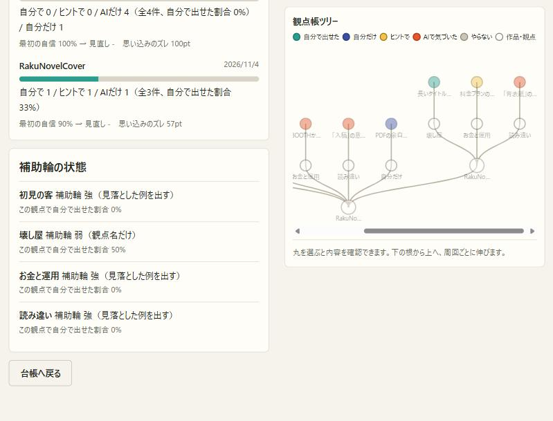
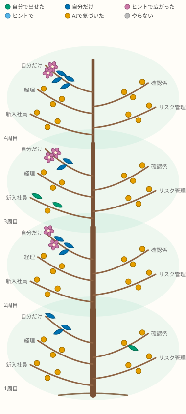

2026-11-04
観点帳のツリーを「一本の木」に作り直す
何を変えたか
- 丸を線でつないだ図から、幹・枝・葉の木に変えた。周回ごとに幹が1段ずつ上へ伸び、各段からAI社員ごとの枝が左右に開く。
- 色を、色覚の違いがあっても区別しやすい Okabe-Ito の配色に揃えた。会話の思考ツリーと観点帳で、同じ意味には同じ色を使う。
- 色に加えて形でも区別する。自分の考えは葉、AIの気づきはつぼみ、ヒントで広がった考えは花。
- 前に見落とした型を、次の周回でヒントなしで自分で出せた葉に、金の縁を付けた。
- 開いたときに、幹→枝→葉の順に育つ動きを付けた。動きを減らす設定の人には動かさない。
修正理由
作者から「今のツリーはダサい。発見や深さを色で分け、根拠も示し、最終的には木のように開いていくイメージにしたい」と指摘があった。前の図は配置が機械的で、何が自分の伸びなのかが一目で分からなかった。


色と形の根拠
| 区分 | 色 | 形 | 根拠 |
|---|---|---|---|
| 自分で出せた | 緑 #009E73 | 葉 | 木が自分で伸ばした葉。緑は「育つ・自分のもの」と結びつきやすい。会話ツリーの「思考」も同じ緑。 |
| 自分だけ | 青 #0072B2 | 葉 | AIの社員が誰も出せなかった、本人ならではの考え。深い青で「深さ・独自性」を表す。会話ツリーの「結論」と同じ色で、自分の到達点として揃えた。 |
| ヒントで広がった | 赤紫 #CC79A7 | 花 | ヒントをきっかけに、AIも出していない考えが新しく咲いたもの。人間の思考が広がった印として一番目立つ形にした。会話ツリーの「発見」も同じ色。 |
| ヒントで追いついた | 空色 #56B4E9 | 葉 | 補助輪（ヒント）の支えで出せた葉。自分の考え側なので寒色にそろえ、明るさで「自分で出せた」と区別した。 |
| AIで気づいた | 橙 #E69F00 | つぼみ | まだ自分の葉になっていない気づき。暖色で目を引き、次の周回で葉に変えたい対象として示す。 |
| 保留（会話ツリー） | 黄 #F0E442 | 丸 | 信号の黄色と同じ「いったん止まる」。 |
| やらない | 灰 #BBBBBB | つぼみ | 判断済みのものは目立たせない。 |
| 前に見落とした型を自分で出せた | 金の縁 #C99A2E | 葉の縁 | 人間の伸びに一番近い印。前の周回でAIだけが出した型を、次はヒントなしで自分で出せたときに付ける。金は「獲得したもの」の連想で、他の区分の色と重ならない。 |
| 深さ（周回） | 幹の段と太さ | 幹 | 年輪のたとえ。周回を重ねるほど下の幹が太くなり、積み重ねが見える。 |
なぜ Okabe-Ito か: 色覚の違いがあっても区別しやすいように設計された8色の配色で、広く使われています。さらに形でも区別するので、色だけに頼りません。
未確認・次の検討
- 周回が10を超えると縦に長くなる。古い周回をたたむ表示が要るかもしれない。
- スマホ幅では木の部分が横にスクロールする。